Dejamos Montevideo y regresamos a Chile con un agradecimiento enorme por esta maravillosa experiencia vivida 🇺🇾🙏.
Esta ciudad hermosa, tranquila, de vientos fuertes y ruidosos, nos acogió durante estos días, con un rico calorcito primaveral 🌞.
Lo que dicen…
Hola soy Vicky, vivo en la ciudad de Rivera que queda a 520 kilómetros de Montevideo en donde hoy se estuvo haciendo el curso de monitor de yoga infantil. Soy profesora de yoga, tengo grupo de adultos y ahora estoy empezando con niños entonces esto es algo fabuloso para mi formación y la verdad estoy con muchas ganas de empezar a usar todas las herramientas que aprendí con Carmen y con Marita que son unos seres de luz, muy especiales que nos traen esta formación que la verdad adoré. Les recomiendo YogaKiddy, les recomienda esta formación y que las usen para su bien. Gracias!
Hola soy Silvana de Montevideo y estamos aca en la formación de Yogakiddy, muy muy felices salimos, todos super contentos y con muchas ganas de trabajar con todos estos niños y niñas uruguayos que nos están esperando. Muchas gracias!
Hola mi nombre es Alicia de Bernardo, soy de Uruguay y también estoy muy contenta. Acaba de terminar la formación de YogaKiddy y es mas de lo que esperaba. Así que me siento feliz y con muchas ganas de ahora enseñar esto a los niños de mi país y a los grandes también para que vuelvan a ser niños. Gracias a ustedes por venir, gracias.
A pesar de haber sido un fin de semana de elecciones presidenciales en Uruguay, decidieron enfocar sus energías en este hermoso trabajo y sobretodo, a la posibilidad de volver a ser niñ@s, atreviéndose nuevamente a jugar e imaginar. Nuestras almas de niñ@s volvieron a florecer! 👦🤸♂️🌷💖👧🤸♀️
Gracias a cada un@ por regalarnos dos hermosos días de risas y aprendizajes. Gracias por esa alegría contagiosa y por esos sinceros abrazos 🥰
Bienvenid@s a la gran familia YogaKiddy y a esta red de amor que no sería lo mismo sin cada uno de ustedes ❤🧘♀️💫🧘♂️
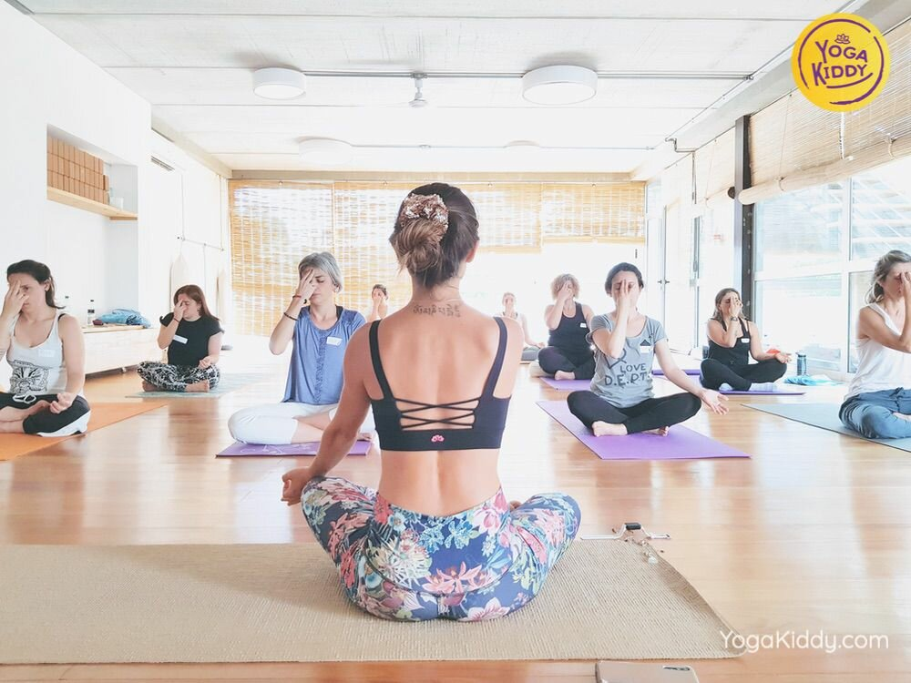
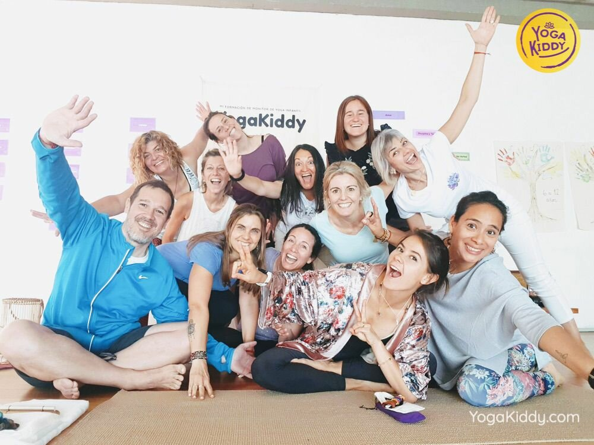
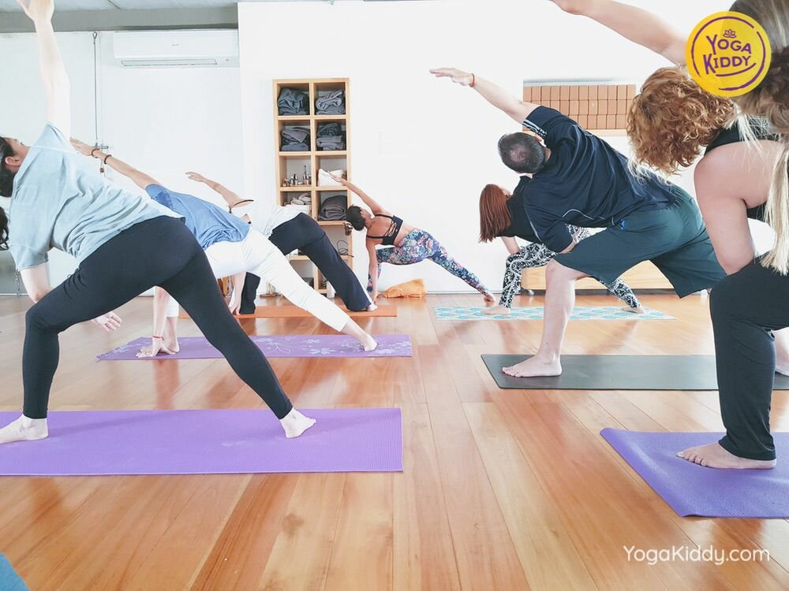
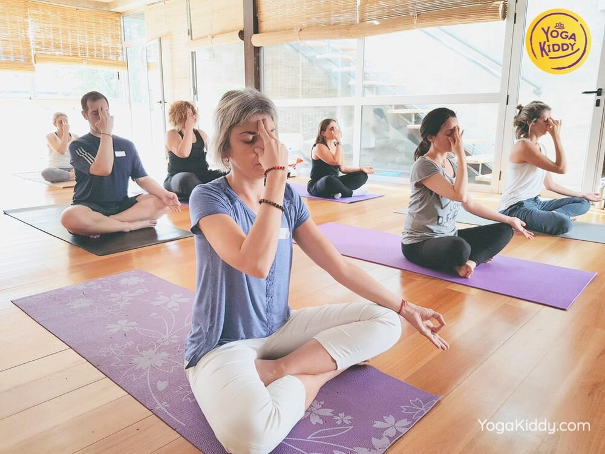
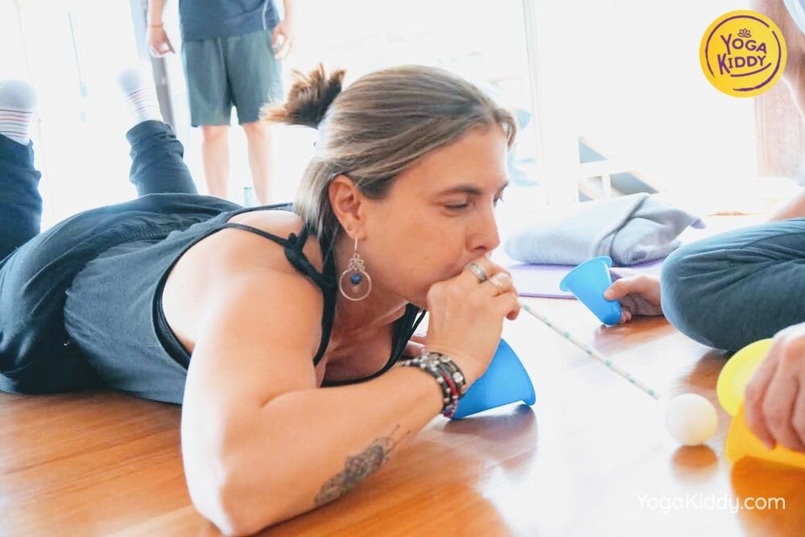
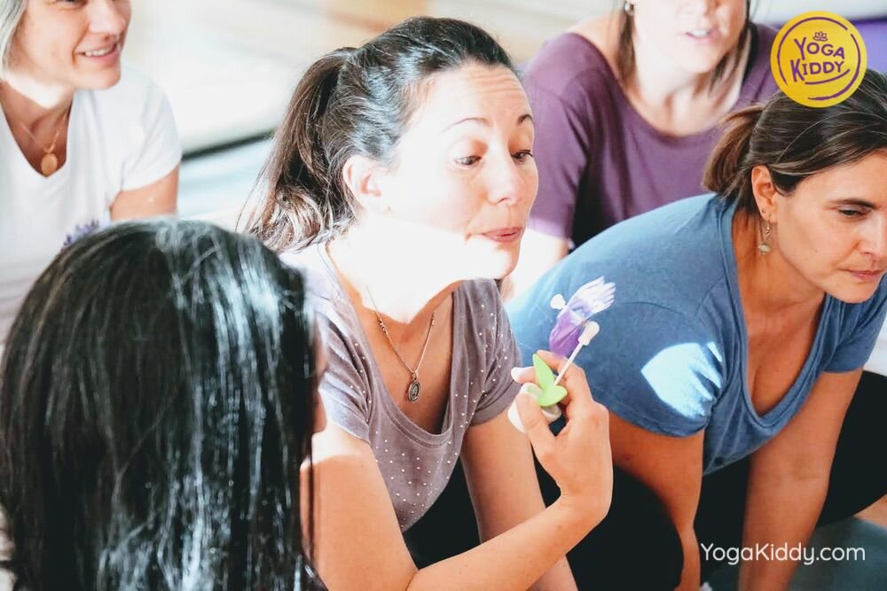
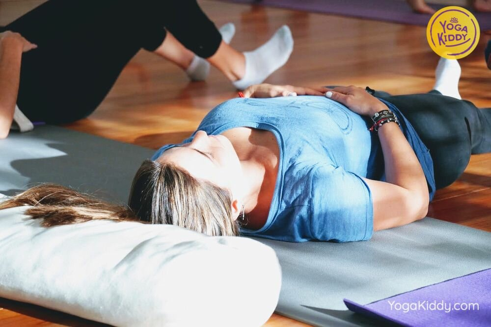
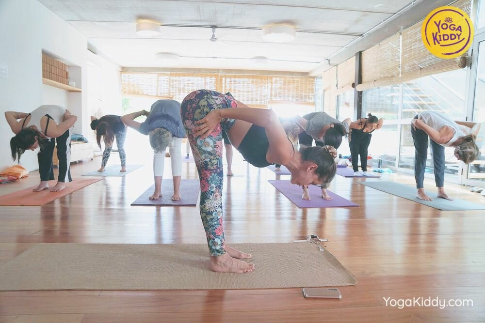
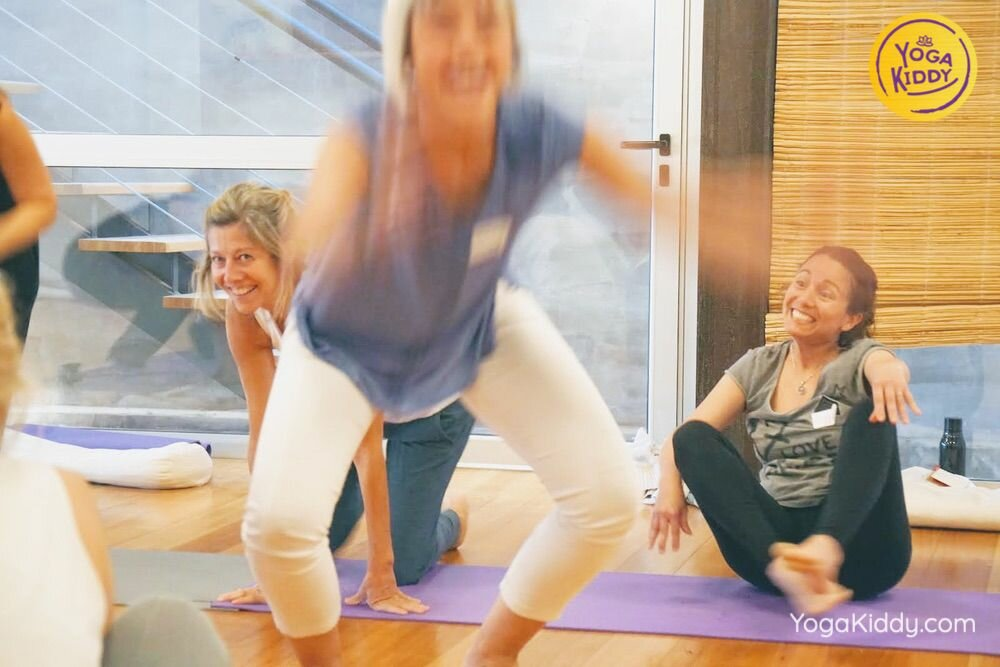
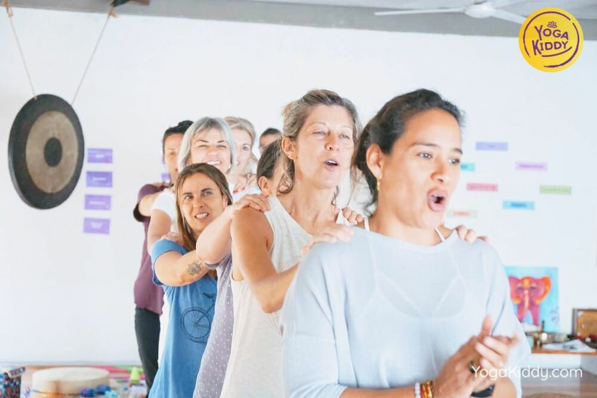
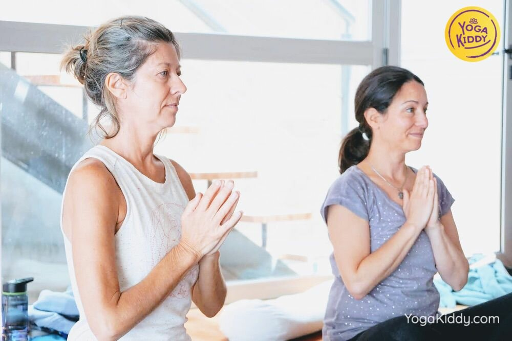
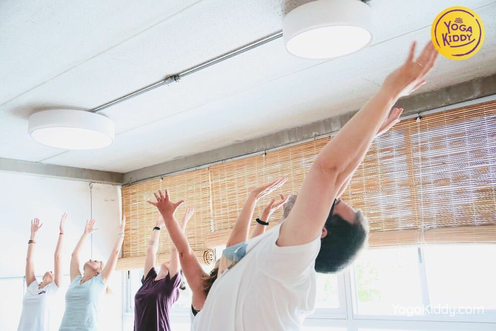